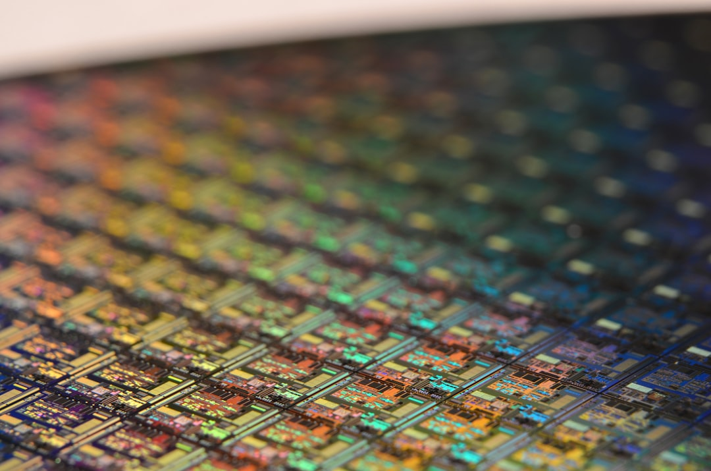

중국 헬륨 이어 갈륨까지, 韓 반도체 소재 이중 봉쇄 현실화

중국은 2023년 8월 갈륨·게르마늄 수출통제를 시행한 데 이어 2025년 들어 헬륨 수출 제한 신호를 잇달아 내보내고 있다. 갈륨 기준 중국의 글로벌 생산 점유율은 약 80~87%, 헬륨 역시 중국 내 생산 비중이 급격히 확대되며 미국산 대체재 가격이 연 20~30% 상승 압박을 받고 있다.
한국의 갈륨 연간 수입량은 약 20~25t 수준으로 추정되며, 이 중 중국 의존도가 87%에 달한다. 헬륨은 반도체 식각·세정 공정 외에도 MRI 냉각, 광섬유 제조, 우주 추진체에 사용되어 대체 소재 전환이 구조적으로 불가능한 품목이다.
고려아연은 2025년 갈륨 생산 공장 신설을 공식화하고 2028년부터 연 15.5t 생산 체계를 목표로 제시했다. 아연 제련 부산물에서 갈륨을 추출하는 방식으로, 원료 확보 측면에서는 상대적으로 안정적이나 정제·고순도화 공정에 약 3년의 기술 안정화 기간이 필요하다.
미국 상무부는 2024년 반도체 지원법(CHIPS Act) 이행 과정에서 핵심 소재 공급처 다변화를 수혜 조건 중 하나로 포함시켰다. 이에 따라 삼성전자·SK하이닉스는 공급망 실사(due diligence) 보고서에 갈륨·게르마늄·헬륨 등 6대 핵심 소재의 단일 국가 의존 리스크를 명기해야 하는 상황이 됐다.
헬륨과 갈륨의 동시 통제는 단순한 '수출 규제 카드' 이상이다. 중국이 특정 소재를 봉쇄할 때마다 한국 반도체 팹의 가동률이 직접 위협받는 구조, 즉 '소재 의존→공정 종속→기술 주권 훼손'의 연쇄가 이미 작동 중이라는 신호다. 갈륨은 GaAs·GaN 기반 파워반도체와 5G RF 소자에 필수이고, 헬륨은 ArF 리소그래피 공정의 퍼지 가스로 대체재가 없다.
고려아연의 갈륨 자립 계획은 의미 있는 첫 발이지만, 연 15.5t은 국내 수요(약 20~25t)의 62~77%를 커버하는 수준이다. 나머지 물량과 헬륨 전량은 여전히 수입에 의존한다. 공급망 리스크를 완전히 내재화하려면 고순도(6N 이상) 갈륨 정제 기술 확보와 헬륨 재활용(리사이클링) 시스템 구축이 병행되어야 한다.
고려아연은 갈륨 국내 독점 생산자 지위를 선점함으로써 삼성전자·SK하이닉스·LG이노텍 등 국내 수요처로부터 장기 공급 계약(offtake agreement)을 끌어낼 수 있는 협상력을 갖게 된다. 2028년 가동 이후 t당 시세(현재 약 400~500달러/kg 수준)를 감안하면 연간 매출 기여분은 60~80억 원 규모다.
미국·캐나다·호주 소재 갈륨 2차 생산업체(예: 캐나다 5N Plus, 미국 Indium Corporation)와 비중국산 헬륨 공급사(카타르 QatarEnergy, 알제리 Sonatrach)는 중국 통제 강화 때마다 프리미엄 수혜를 받는다. 한국 조달 담당자들이 이미 이들과 중장기 계약 논의를 진행 중인 것으로 현장에서 확인된다.
중국산 갈륨·헬륨에 조달 구조를 고정해 온 중소형 반도체 후공정·파워반도체 전문업체들이 직격탄을 맞는다. 대기업은 대체 소싱 여력이 있지만, 연간 조달 규모 1t 이하의 소형 수요처는 가격 협상력 자체가 없어 비중국산 프리미엄(현재 갈륨 기준 30~50% 할증)을 고스란히 흡수해야 한다.
국내 디스플레이 업계(삼성디스플레이·LG디스플레이)도 헬륨 수급 차질 시 OLED 증착 공정에 영향을 받는다. 헬륨 리사이클링 시스템을 자체 구축한 삼성디스플레이와 달리, 협력사 레벨에서는 회수율이 60% 미만인 경우가 많아 외부 조달 의존도가 여전히 높다.
갈륨 조달 담당자는 지금 당장 고려아연 2028년 물량에 대한 MOU·offtake 계약 협의를 시작해야 한다. 선점 타이밍은 2025~2026년이며, 공장 완공 이후에는 협상 주도권이 공급자 쪽으로 완전히 넘어간다.
헬륨은 단기적으로 카타르 QatarEnergy 장기 계약(LT contract, 통상 3~5년)과 국내 재활용 설비 투자를 병행해야 한다. 헬륨 회수·재압축 시스템의 투자 회수 기간은 통상 2~3년으로, 현재 가격 수준에서는 ROI가 충분히 나온다.
실제 조달 현장에서는 — 중국산 갈륨 가격이 공식 통제 발표 이전에 이미 3~6개월 앞서 현물 시장에서 10~20% 오르는 패턴이 반복된다. 2023년 8월 규제 직전에도 동일한 선행 신호가 있었다. 지금 헬륨 현물 프리미엄이 조용히 올라가고 있다면, 이미 업스트림에서 무언가 진행되고 있다는 뜻이다. 구매 부서는 시황 모니터링 주기를 월 단위에서 주 단위로 전환해야 한다.
이 포스팅은 쿠팡 파트너스 활동의 일환으로 수수료를 제공받습니다.